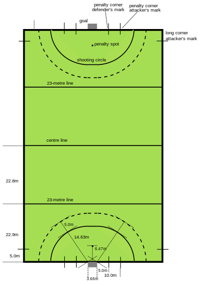
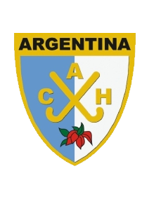

Hockey sobre cesped
El hockey sobre césped es un deporte en el que dos equipos rivales de once jugadores, compiten para meter una bocha en el arco del
equipo contrario. Las acciones se realizan con un palo de hockey que permite controlar la bocha. El objetivo consiste en marcar más
goles que el equipo contrario al finalizar el tiempo de juego reglamentario (cuatro cuartos de quince minutos con descansos de dos
minutos entre el primer y segundo tiempo, otro entre el tercero y en el cuarto. Entre el segundo y el tercero hay cinco o quince
minutos). En caso de un empate, hay tiros de penales australianos de cinco rondas (más rondas de muerte súbita en caso de un nuevo empate).
Historia
Se tienen registros gráficos de formas rudimentarias de hockey (juego de palos y una bocha) en muchos sitios del mundo. Por ejemplo, en un
bajorrelieve egipcio del 2000 a. C. se ven dos personas utilizando palos con una pelota entre ellos. Hay una figura del 1272 A.C en Irlanda.
Hay una imagen en la Antigua Grecia (del 500 a. C.) de varios hombres jugando desnudos a empujar una pelota con bastones curvos (o cuernos).
Existía también un juego que se llamaba κερητίζειν (kerētízein) porque se jugaba con cuernos ("keras" en griego). Los romanos tenían un
juego parecido llamado paganica.
En Mongolia Interior (China), la etnia daur jugaban a un juego llamado beikou, parecido al hockey, durante los últimos mil años, por lo menos.
Igualmente, existe un relieve de la Edad Media en Europa donde se pueden ver dos personas jugando.
La palabra inglesa hockey proviene posiblemente del francés medio hoquet (‘bastón curvo de pastor’), diminutivo del francés antiguo hoc (‘gancho’).
Y se mencionó por primera vez en 1363 en Inglaterra, en una proclama del rey Eduardo III
Debido a estos antecedentes, es poco posible que varios siglos después, cuando los británicos invadieron la India en 1757, hayan adoptado un juego parecido al hockey y lo hayan llevado a Europa. Parecidos al hockey son el hurling y el shinty.
En el siglo XVI, el pueblo originario Mapuche, practicó un deporte con una bola que debían dominar con bastones, llamado "Chueca" o "Palín".
Un juego parecido al hockey moderno se practicó en escuelas públicas inglesas a principios del siglo XIX. El primer club de hockey fue el Blackheath Football and Hockey Club, en Londres, que se fundó alrededor de 1861. En 1871 se formó el Teddington Hockey Club y en 1875 la Asociación Inglesa de Hockey. En la década de 1880 el juego se asentó definitivamente y las mujeres comenzaron a practicarlo con entusiasmo. El actual organismo rector del deporte en su modalidad masculina, la Asociación de Hockey, se fundó en 1886 y la Asociación Inglesa Femenina de Hockey en 1895, un año después de que lo hiciera la Unión Irlandesa de Hockey de Mujeres. Durante la década de 1890 se jugaron partidos internacionales y el hockey fue incluido en los Juegos Olímpicos de 1908.
A finales del siglo XVIII se conformó la primera asociación de hockey sobre hierba. Las selecciones nacionales de India y Pakistán fueron las grandes dominadoras mundiales de este deporte durante muchas décadas.
En 1924 se creó la Federación Internacional de Hockey (FIH). En 1982 se unificaron los juegos masculinos y femeninos bajo los auspicios de la FIH, que en la década de 1990 cuenta con más de cien países miembros.
El deporte ha estado dominado durante mucho tiempo por India y Pakistán, que han ganado todos los torneos olímpicos desde 1928 hasta 1968, pero más adelante han aparecido equipos de otros países que han roto la hegemonía que indios y pakistaníes han tenido a escala internacional; es el caso de Holanda, Alemania, Nueva Zelanda, Inglaterra, España, Argentina y Australia.
La Copa del Mundo de la FIH se celebró por primera vez en 1971 para hombres, y en 1974 para mujeres. En 1994 la Copa del Mundo masculina se celebró en la ciudad australiana de Sídney y fue ganada por Pakistán, que es el único país que la ha ganado cuatro veces. La Copa del Mundo femenina se celebró el mismo año en Dublín y ganó por primera vez Australia. El Trofeo de Campeones se celebró por primera vez en Lahore (Pakistán) en 1978 y compiten anualmente los seis mejores equipos masculinos del mundo; el trofeo femenino comenzó en 1987. El campeonato de Europa comenzó en 1970 para hombres y en 1984 para mujeres; la competición es para selecciones nacionales y se celebra cada cuatro años. También se celebra la Copa de Europa de Equipos Campeones, organizada por primera vez en 1990 para hombres y 1991 para mujeres.
Actualmente el hockey sobre césped está dominado por países como Alemania, Argentina, Australia, Países Bajos y Reino Unido.
En la mayoría de los países donde se juega este deporte, existen ligas organizadas entre clubes de hockey masculino y femenino.
Sistemas de juego
La distribución de los jugadores en el campo de juego suele ser 4-4-2 (cuatro defensores, cuatro mediocampistas y dos delanteros), 4-3-3 (cuatro defensores, tres mediocampistas y tres delanteros) o, en situaciones de mucha presión, 3-3-4 (tres defensores, tres mediocampistas y cuatro delanteros).
Posiciones de los jugadores
Las posiones estan compuestas por 11 jugadores que estan distribuidos en: porteria, defensa, mediocampo y delantero.
El portero o arquero puede jugar hasta los 23 metros, pero solamente dentro del área tiene la posibilidad de usar sus privilegios especiales:
impulsar la bocha con los pies, y detenerla con los brazos. Por esa razón, y por el peso del equipo de protección que limita sus movimientos
y su velocidad, habitualmente juega cerca del arco o portería.
Las posiciones de defensa son, según el sistema de juego, defensores centrales, defensores laterales,defensor central adelantado o último defensor central.
Las posiciones en el mediocampo varían según el sistema de juego., los mediocampistas estan dividos en:
mediocampistas laterales y centros.
Las posiciones en el ataque dependen también del sistema de juego. a los atacantes se los puede dividir en delanteros punta por los laterales, o medios al atacante central.
Campo de juego

El campo de juego es rectangular y tiene 91,4 metros de largo y 55 metros de ancho.
Las líneas laterales marcan los perímetros largos del campo, y las de fondo marcan los perímetros cortos del mismo.
Las líneas de gol están situadas en la parte de las líneas de fondo entre los postes de los arcos. Una línea central está marcada en el medio del campo. Las líneas conocidas como 23 metros están marcadas cruzando el campo a lo ancho a 22,9 metros de las líneas de fondo.
Las áreas están marcadas dentro del campo alrededor de los arcos y enfrente al centro de las líneas de fondo.
El punto del penal tiene un diámetro de 150 milímetros y está marcado en frente del centro de cada arco con su centro a 6,4 metros desde el borde interno de la línea de gol.
Los banderines de córner deben tener un poste de entre 1,2 y 1,5 metros de altura y están situados en cada esquina del campo.
Los arcos están dispuestos fuera del campo en el centro y tocando las líneas de fondo.
En la década de 1970, los campos de césped natural comenzaron a sustituirse por césped sintético. Al reducirse la fricción de la pelota y reducirse los botes, el juego se hizo más veloz y preciso. Los primeros tipos de césped sintético se rellenaban con arena. Luego se desarrollaron campos rellenos de agua, que mejoran aún más el deslizamiento de la pelota. Sin embargo, son muy costosos y requieren un alto consumo de agua, por lo que las federaciones están investigando otras tecnologías para reducir el costo y el impacto ambiental.
Equipos
Para jugar un partido se necesitan 2 equipos de no más de 18 jugadores cada uno. Solo 11 jugadores de cada equipo estarán en el terreno
de juego al mismo tiempo. Se permite a cada uno de los equipos sustituir de entre los 18 jugadores como máximo. En la actualidad el
hockey sobre césped goza de variantes similares a las del fútbol, ya que puede ser jugado en superficies más duras como son el concreto
pulido (hockey de sala) en la que el número de jugadores es de 5 en campo más el arquero. Esto ha llevado al deporte en esta modalidad
a tener algunas variantes en sus reglas que difieren a las que se llevan a cabo en el hockey sobre césped.
Sustitución
Está permitida en cualquier momento excepto después de la concesión y antes de la finalización de un penalty córner. El único cambio permitido en ese momento es el de un portero-defensor lesionado o expulsado.
Árbitros
Dos árbitros controlarán el juego y aplicarán el reglamento; ellos serán los únicos jueces para un juego limpio y correcto.
Advertencias o sanciones: por una falta, el jugador puede ser avisado o advertido.
En el caso de ser advertido, se le indica con una tarjeta verde. En el ámbito internacional una tarjeta verde significa una suspensión temporaria de 2 minutos de juego.
Suspendido temporalmente por un mínimo de 10 minutos de tiempo de juego (indicado con una tarjeta amarilla).
Suspendido de forma permanente del partido en disputa (indicado con una tarjeta roja).
Los jugadores suspendidos deben permanecer en un lugar designado, hasta que el árbitro que lo suspendió lo autorice a volver al juego.
La duración de la suspensión temporaria puede extenderse por mala conducta del jugador suspendido.
Penales
Al igual que en el fútbol, el hockey sobre césped conoce el penalty stroke o shoot-out. Es la pena máxima con la que se sanciona cualquier falta producida dentro del área propia, sea intencionalmente, o involuntariamente pero impidiendo la consecución de un gol.
El lanzador se coloca detrás de un punto situado a 7 yardas frente a la portería y, sin golpear, empuja o levanta la pelota disparando hacia portería; el portero intenta interceptarla con su equipo de protección, o bien con el palo. De nuevo, el hockey vuelve a mostrar su carácter asimétrico: el portero tiene el palo en su mano derecha y un guante en la izquierda. En particular, al portero le está permitido detener o despejar la pelota con el guante, pero sin agarrarla o retenerla en el mismo.
El shoot-out, también conocido como "penal australiano", es un penalty que se empieza desde la línea veintidós, cuando el árbitro pite los jugadores tendrán que ir contra el portero, solo tendrán 8 segundos para marcar gol, si no lo hacen no se sumará a cada equipo.
Córners cortos
El córner corto es la pena con la que se sancionan las faltas cometidas dentro del área propia, que eviten un gol o intencionadas fuera del área pero dentro de la línea de 25 yardas. Básicamente se puede resumir de la siguiente manera:
La bocha se coloca en la línea de fondo sobre una señal a 10 metros del poste de portería.
Desde allí un atacante empujará o golpeará la bola sin elevarla, y debe tener al menos un pie fuera del terreno de juego.
Solo pueden estar involucrados en la ejecución de la falta 5 jugadores defensores, incluyendo el portero. Los jugadores atacantes han de estar al borde del área fuera de ésta, y los 5 jugadores defensores han de estar detrás de su línea de fondo, pudiendo situarse dentro de la portería. El resto de los jugadores defensores permanecerán más allá de la línea central.
El jugador que realiza el saque pasa la bola a los compañeros situados al borde del área, momento en el cual los jugadores defensores pueden salir inmediatamente a intentar bloquear o impedir el tiro a puerta. La bola ha de salir del área, momento a partir del cual se puede jugar en la forma que se desee para intentar la consecución del gol (tiro directo, pase a otro compañero, etc.)
Si el primer tiro a puerta es un golpe, la bola no puede elevarse a una altura mayor de 46 cm (altura de las tablas del fondo de la portería).
Para los flicks, scoops, desvíos y segundos o subsiguientes golpes a puerta, la bola puede elevarse a cualquier altura, siempre y cuando no exista peligro para los jugadores contrarios que se encuentren cerca de la bola.
Desarrollo y expansión
La práctica del hockey sobre césped es muy similar entre hombres y mujeres, hasta tal punto que la propia Federación Internacional no realiza
distinciones de sustancial relevancia entre ambos sexos; de hecho, la reglamentación permanece invariable. A tenor de esto, el hockey sobre
césped se constituiría como un único deporte que cuenta con dos disciplinas (masculina y femenina).
La seleccion argentina

Viendo un poco por encima la seleccion argentina, se dividiria en 2, la femenina y la masculina.
en donde se encuengran entre los 10 mejores equipos del mundo
Por un lado en seleccionado femenino se encuentra en el top 2 por debajo de Paises bajos y por encima de Australia